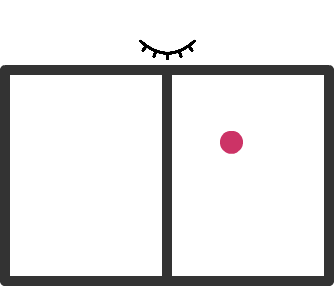

Thermodynamic Cost and Benefit of Memory
Paper by Susanne Still, Summary and Illustrations by Farita Tasnim
Feels
I thoroughly enjoyed reading this stunning work by Susanne Still. The generality of the theoretical framework developed herein, as well as its uniqueness due to accounting for partial observability, helped set the spark for many ideas in my mind, which I'll sprinkle throughout my summary below.
In a Nutshell
A theoretical framework for the thermodynamics of memories interacting with partially observable systems demonstrates that minimizing the lower bound of the dissipation of such an information engine leads to an optimal data representation strategy when available knowledge and system manipulability are limited.
Szilard Engine
A particle is trapped in a box with a partition in the middle. If an agent who is observing the system has knowledge of which half of the box the particle lies in, it can perform work extraction (of amount ) by isothermal expansion. However, models such as this assume that (1) all agent choices are optimal and (2) all relevant degrees of freedom are observable. This heavily limits the discussion of information engines to cases where all captured information can be converted into useful work. Most of the time in real systems, agents must act on partial knowledge and predict quantities relevant to work extraction from the limited available data. Modeling this more realistic aspect of information engines would be useful for systems such as biomolecular machines and engineered nanotechnology.

General Information Engine Setup
The following conventions are used:
- The cost of information acquisition and decision making are included in the energy accounting (otherwise information can be viewed as fuel supplied from the outside).
- The engine is allowed to make use of temperature differences.
- Energy flows into a system are positive.
The information engine contains the following components:
- A partially observable system, with microstate denoted by a random variable
with realizations
- An agent implemented by another physical system which turnes measurements into a stable memory denoted by a random variable
with realizations
. The memory is used to decide on a work extraction protocol.
- A work extraction device that allows the agent to couple useful energy out of the system.
Each cycle runs as follows:
- From
: The agent performs measurement and writes it into memory. This protocol changes external control parameters on the memory as a f(observable data). During this process the engine is connected to a heat bath at temperature
, and the average amount of work done on the memory is
, while the average amount of heat dissipated is
.
- From
, the temperature of the heat bath is adjusted to temperature
.
- From
, work extraction occurs via a protocol that is a f(agent's memory state). During this process, the average amount of work extracted from the system is
and the average heat absorved from the heat bath is
. After this process, the memory no longer has any exploitable correlations with the system.
- From
, the system is prepared for the next cycle, by a protocol which is invariant across cycles. This process is assumed to not require any work. In the example of the Szilard engine, this was removing the partition and re-inserting it into the middle of the box.
Free Energy Changes
The free energy change at a time depends on the energy and entropy averaged over the joint distribution over the system states and memory states:
where the Shannon entropy is defined as:
We further establish that:
System Decomposition
The system can be decomposed into observable (write-able into memory) and non-observable components:
The system can be decomposed into manipulable (relevant for work extraction) and non-manipulable components:
The mutual information in order to extract work.
System Manipulation
The system cannot be manipulated in a way that changes anything but , i.e. the state of the non-manipulable components
is unaffected by the state of the manipulable components and the state of the memory during the work extraction period.
Data Representation
The stochastic mapping (i.e. the data representation) from observable data to memory state is independent of unobservable data:
Marginal Distributions
The marginal distributions for the system are invariant to all changes performed on the system:
Inference
Original Paper